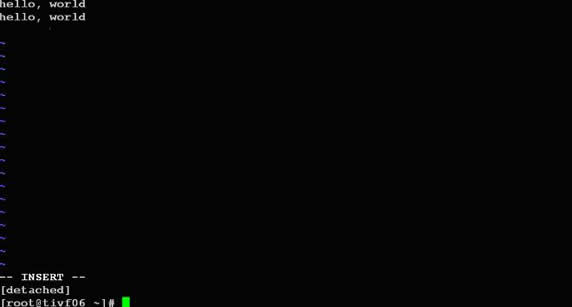
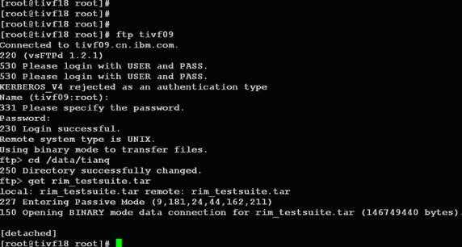
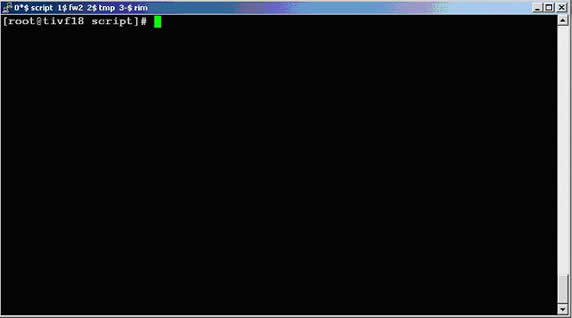
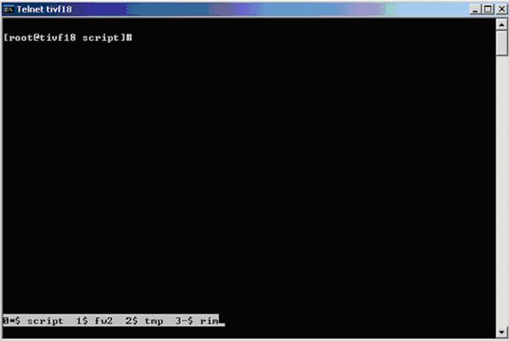

开始使用Screen
简单来说，Screen是一个可以在多个进程之间多路复用一个物理终端的窗口管理器。Screen中有会话的概念，用户可以在一个screen会话中创建多个screen窗口，在每一个screen窗口中就像操作一个真实的telnet/SSH连接窗口那样。在screen中创建一个新的窗口有这样几种方式：
1．直接在命令行键入screen命令
[root@tivf06 ~]# screenScreen将创建一个执行shell的全屏窗口。你可以执行任意shell程序，就像在ssh窗口中那样。在该窗口中键入exit退出该窗口，如果这是该screen会话的唯一窗口，该screen会话退出，否则screen自动切换到前一个窗口。
2．Screen命令后跟你要执行的程序。
[root@tivf06 ~]# screen vi test.cScreen创建一个执行vi test.c的单窗口会话，退出vi将退出该窗口/会话。
3．以上两种方式都创建新的screen会话。我们还可以在一个已有screen会话中创建新的窗口。在当前screen窗口中键入C-a c，即Ctrl键+a键，之后再按下c键，screen 在该会话内生成一个新的窗口并切换到该窗口。
screen还有更高级的功能。你可以不中断screen窗口中程序的运行而暂时断开（detach）screen会话，并在随后时间重新连接（attach）该会话，重新控制各窗口中运行的程序。例如，我们打开一个screen窗口编辑/tmp/abc文件：
[root@tivf06 ~]# screen vi /tmp/abc之后我们想暂时退出做点别的事情，比如出去散散步，那么在screen窗口键入C-a d，Screen会给出detached提示：
暂时中断会话

半个小时之后回来了，找到该screen会话：
[root@tivf06 ~]# screen -ls
There is a screen on:
16582.pts-1.tivf06 (Detached)
1 Socket in /tmp/screens/S-root.重新连接会话：
[root@tivf06 ~]# screen -r 16582看看出现什么了，太棒了，一切都在。继续干吧。
你可能注意到给screen发送命令使用了特殊的键组合C-a。这是因为我们在键盘上键入的信息是直接发送给当前screen窗口，必须用其他方式向screen窗口管理器发出命令，默认情况下，screen接收以C-a开始的命令。这种命令形式在screen中叫做键绑定（key binding），C-a叫做命令字符（command character）。
可以通过C-a ?来查看所有的键绑定，常用的键绑定有：
C-a ? 显示所有键绑定信息
C-a w 显示所有窗口列表
C-a C-a 切换到之前显示的窗口
C-a c 创建一个新的运行shell的窗口并切换到该窗口
C-a n 切换到下一个窗口
C-a p 切换到前一个窗口(与C-a n相对)
C-a 0..9 切换到窗口0..9
C-a a 发送 C-a到当前窗口
C-a d 暂时断开screen会话
C-a k 杀掉当前窗口
C-a [进入拷贝/回滚模式Screen常用选项
使用键绑定C-a ?命令可以看到, 默认的命令字符（Command key）为C-a，转义C-a（literal ^a）的字符为a：
Screen 常用选项

因为screen把C-a看作是screen命令的开始，所以如果你想要screen窗口接收到C-a字符，就要输入C-a a。Screen也允许你使用-e选项设置自己的命令字符和转义字符，其格式为：
-exy x为命令字符，y为转义命令字符的字符
下面命令启动的screen会话指定了命令字符为C-t，转义C-t的字符为t，通过C-t ?命令可以看到该变化。
[root@tivf18 root]# screen -e^tt自定义命令字符和转义字符

管理你的远程会话
先来看看如何使用screen解决SIGHUP问题，比如现在我们要ftp传输一个大文件。如果按老的办法，SSH登录到系统，直接ftp命令开始传输，之后。。如果网络速度还可以，恭喜你，不用等太长时间了；如果网络不好，老老实实等着吧，只能传输完毕再断开SSH连接了。让我们使用screen来试试。
SSH登录到系统，在命令行键入screen。
[root@tivf18 root]# screen在screen shell窗口中输入ftp命令，登录，开始传输。不愿意等了？OK，在窗口中键入C-a d：
管理你的远程会话

然后。。退出SSH登录？随你怎样，只要别杀掉screen会话。
是不是很方便？更进一步，其实我们可以利用screen这种功能来管理你的远程会话，保存你所有的工作内容。你是不是每次登录到系统都要开很多窗口，然后每天都要重复打开关闭这些窗口？让screen来帮你“保存”吧，你只需要打开一个ssh窗口，创建需要的screen窗口，退出的时候C-a d“保存”你的工作，下次登录后直接screen -r
最好能给每个窗口起一个名字，这样好记些。使用C-a A给窗口起名字。使用C-a w可以看到这些窗口名字，可能名字出现的位置不同。使用putty：
putty

使用telnet：
telnet

杀掉screen中的其他session
[root@rhel63single ~]# kill -9 5850
[root@rhel63single ~]# screen -ls
There is a screen on:
5850.lei2 (Dead ???)
Remove dead screens with 'screen -wipe'.
1 Socket in /var/run/screen/S-root.
[root@rhel63single ~]# screen -wipe
There is a screen on:
5850.lei2 (Removed)
1 socket wiped out.
No Sockets found in /var/run/screen/S-root.